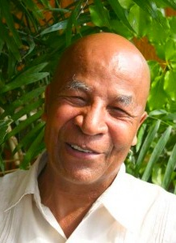
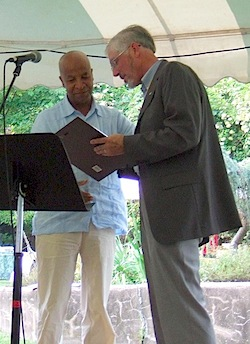

Friends,
In 2008, the Fellowship of Reconciliation awarded the Pfeffer Peace Award to Ricardo Esquivia for his work in the peace movement of the High Mountain Zone of El Carmen de Bolívar, Colombia.
|

Ricardo Esquivia Ballestas (photo courtesy Sembrandopaz).
|
Ricardo has recently received death threats from the paramilitary group Los Urabenos and is also facing detention by the Colombian authorities on charges fabricated by that illegal group. We need your help in supporting Ricardo and his work with conflict-affected communities of the Caribbean Coast in Colombia to peacefully reconcile and build a better future.
Join FOR in sending a letter on Ricardo's behalf to Colombian authorities, through our allies at Witness for Peace.
Ricardo, who is the director of the Asociación Sembrando Semillas de Paz (Sembrandopaz), is being threatened with political persecution -- and we must stand with him as defenders of democracy and human rights.
When FOR awarded Ricardo our international peace award in 2008, he had been repeatedly threatened with detainment by the former Colombian intelligence agency. You responded to our call for action then, and it was public pressure that successfully deterred Ricardo's detention.
Add your voice to help end this harrassment so that Ricardo and his colleagues can continue the pursuit of peace in Colombia without threat.
|

Ricardo being presented with the Pfeffer Peace Award in Sept. 2008 by former FOR Executive Director Mark Johnson.
|
Ricardo Esquivia Ballestas has been a driver of peace and community development in the region for more than 40 years; he is among the Colombia faith leaders who opened the doors to FOR accompaniment work in Colombia, and has worked closely with our sister organization SERPAJ Colombia in the Northern Coast region of the country. In addition to FOR's award, he was presented with the Peacemaker in Action award by the Tanenbaum Center for Interreligious Understanding.
He is co-founder and director of the Commission for Restoration, Life and Peace of the Evangelical Council of Churches of Colombia, and founder and former director of Justapaz, the Christian Center for Justice, Peace and Nonviolent Action of the Mennonite Church of Colombia. For many years he represented all non-Catholic religious groups on the National Council of Peace, which advises the president of Colombia. Despite his record -- or because of it -- Ricardo has been repeatedly threatened, baselessly, with detention or legal action.
Join us in calling on Colombian President Santos and other officials to ensure the safety and security of Ricardo Esquivia Ballestas.
Sincerely,
Susana Pimiento Chamorro
Western Hemispheric Regional Liaison/Coordinator/Organizer
Fellowship of Reconciliation |